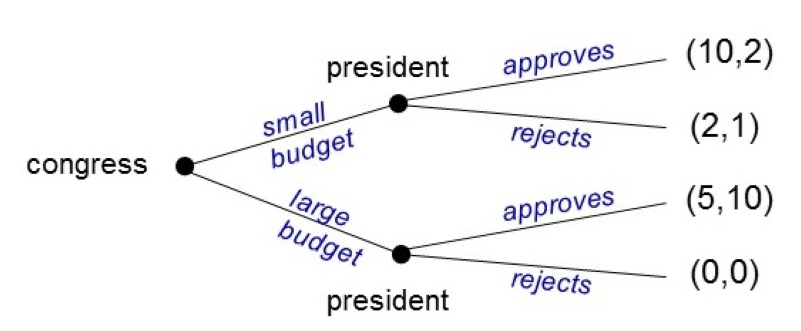
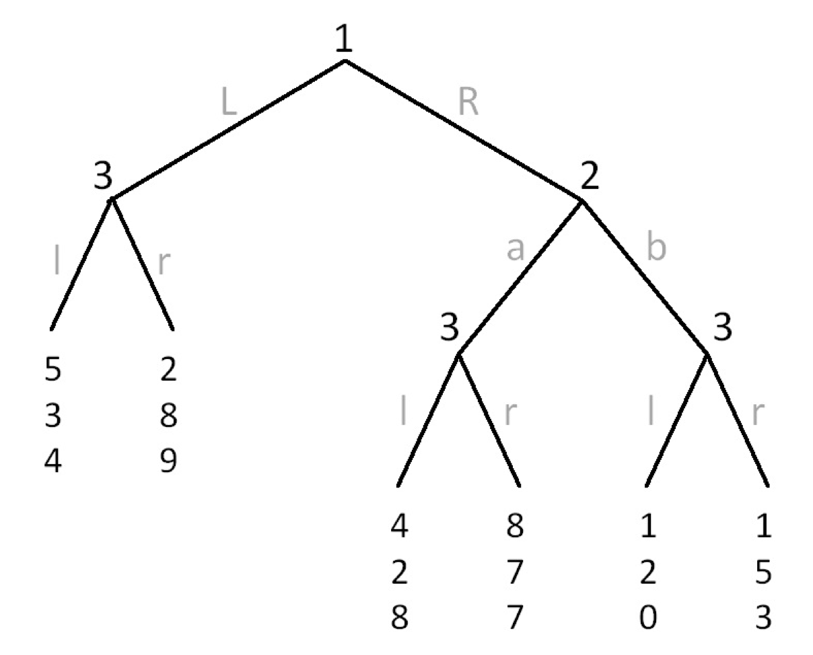
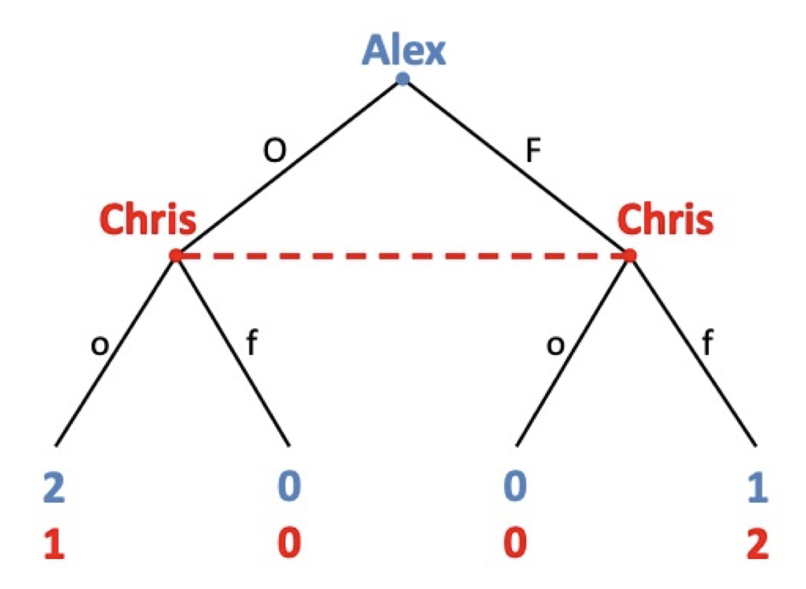
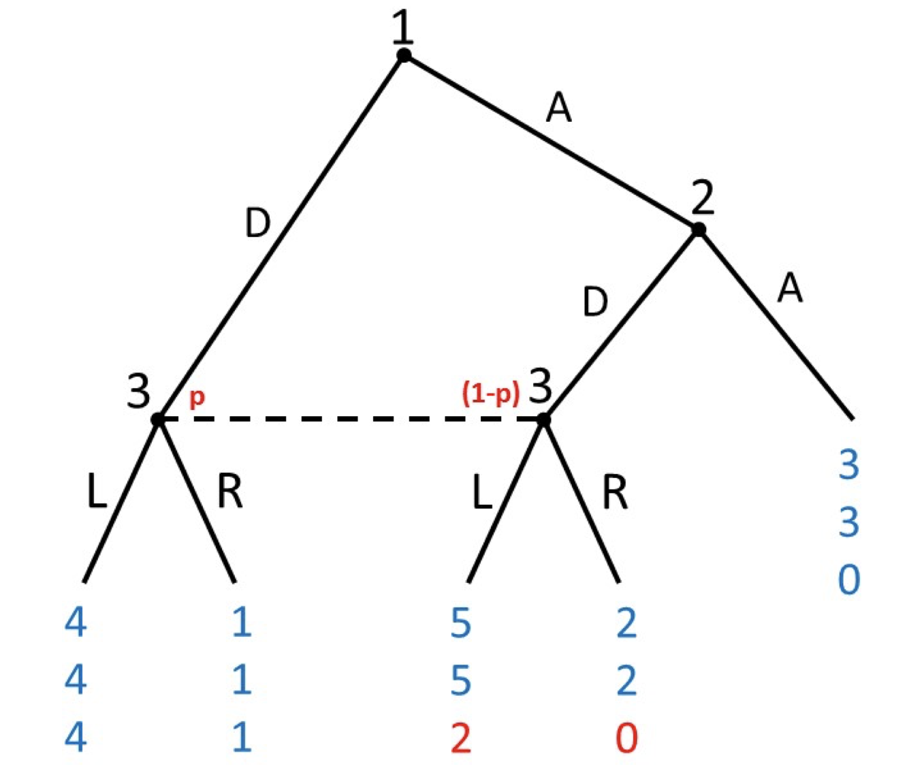
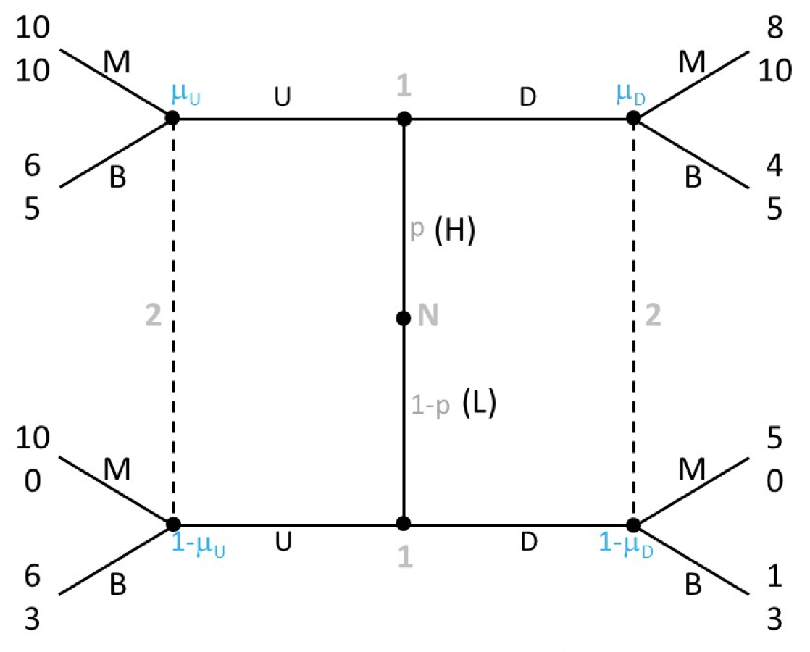

Guide to Game Theory
Basics of Games
Games consist of:
- A set of players \(i = 1, \dots, N\)
- For each player \(i\), a set of actions \(a_i\) and strategies \(s_i\) or \(\sigma_i\).
- An action profile of all player’s actions \(a = (a_1, \dots, a_N)\), also notated \(a = (a_i, a_{-i})\), where \(a_{-i}\) is the actions of all other players not player \(i\).
- A strategy profile of all player’s strategies \(s = (s_1, \dots, s_N)\), also notated \(s = (s_i, s_{-i})\).
- For each player \(i\), preferences over the action profiles, specified by a payoff function \(u_i(s_i, s_{-i})\).
Strategies and Actions are two different things.
An action is something you do on a particular moment a player has to make a move.
- For example, in chess, an action might be move the knight to some square.
A strategy is a complete plan of action - i.e. a plan of all the actions you will take in the game, for all the possible alternate scenarios that could occur in the game.
- For example, in chess, a strategy would be a complete plan of what actions to take, for every possible response of your opponent, for every possible move throughout the entire game.
For static-complete information games, these two are often equivalent, but it is important to make this distinction for dynamic and incomplete information games.
Preference Theory and Utility
Let us define \(X\) as a set of alternatives that some agent \(i\) can achieve. Alternatives are both mutually exclusive and exhaustive.
Mutually exclusive means that if you end up with one alternative, you cannot end up with any other alternative at the same time.
- For example, if I get a 95 on my exam, I cannot possibly also get a 85 on the same exam. Having gotten one score on my exam, the other alternatives cannot be obtained.
Exhaustive means \(X\) consists of all possibilities - the set of all possible outcomes.
- For example, the potential scores on an exam are 0 - 100, so the set \(X\) includes all of these potential scores. There are no potential outcomes I can get outside of \(X\).
A preference relation is a relationship between two elements of \(X\):
- If \(x \succ y\), the agent strictly prefers \(x\) to \(y\) - i.e. when given the choice, they will always choose \(x\).
- If \(x \sim y\), the agent is indifferent between \(x\) and \(y\).
- If \(x \succsim y\), the agent weakly prefers \(x\) to \(y\) - i.e. the agent either prefers \(x\) to \(y\), or is indifferent, but never prefers \(y\) to \(x\).
Preferences are assumed to be rational if they are complete and transitive.
Complete preferences means for all \(x, y \in X\), either \(x \succsim y\) or \(y \succsim x\).
- For any two alternatives, the agent always has some type of preference relation (never “no opinion”).
- This does not mean they cannot be indifferent (that is a preference relation). It just means that if you ask the agent how they feel between \(x\) and \(y\), they must be able to say they prefer one, or are indifferent, and not say “I don’t have an opinion”.
Transitive preferences means that for \(x, y, z \in X\), if \(x \succsim y\), and \(y \succsim z\), then \(x \succsim z\).
- Note: group preferences are not always transitive (condercet’s paradox), and thus not rational. But for individual agent purposes, we generally assume to this to be true.
A utility function is a mapping \(u: X \rightarrow \mathbb R\), such that for any \(x, y \in X\), \(u(x) ≥ u(y)\) if and only if \(x \succsim y\). Or in other words, the utility function should match the preference relations.
The mapping of utility functions is often ordinal, not continuous.
- For example, let us say \(u(x) = 2\) and \(u(y) = 1\). If \(u\) is ordinal, we can say that \(x\) is preferred to \(y\). But, we cannot say \(x\) is preferred twice as much as \(y\), since for ordinal, the distance means nothing - only the magnitude.
Any rational set of preferences (both complete and transitive) can be represented by a utility function.
- The proof is beyond the scope of this lesson. But we can quickly show why if either are violated, they cannot be represented.
- If the preferences are incomplete, we cannot assign a number utility to the alternative that the individual is unsure about/does not have an opinion on.
- If the preferences are not transitive, we cannot create a utility function, because numbers \(\mathbb R\) (which the utility function uses as a mapping) are transitive, and you cannot map something non-transitive into something transitive.
What is the best choice from \(X\) that an agent can make (rationality)?
We define the “best choice” as outcomes/alternatives included in the maximal set of \(X\), notated \(M(\succsim, X)\):
\[ \begin{split} M(\succsim, X) & = \{ x \in X : x \succsim y, \ \forall \ y \in X \} \\ & = \arg \max\limits_{x \in X} \{u(x) \} \end{split} \]
Or in more intuitive terms, the inputs \(x \in X\) that make the utility function \(u \in \mathbb R\) achieve its maximum value, are the elements of \(x\) in the maximal set \(M(\succsim, X)\).
Dominant Strategy
A strategy \(s_i^D\) is a strictly dominant strategy for player \(i\) if it gives a higher payoff than any other strategy of player \(i\), no matter the choice of strategy of other players.
\[ \underbrace{u_i(s_i^D, s_{-i})}_{S_i^D \text{ utility} } > \underbrace{u_i (s_i, s_{-i})}_{\text{utility of others}} \quad \forall \ s_{-i}, \ \forall s_i ≠ s_i^D \]
A strategy \(s_i^1\) that always produces a lower payoff than \(s_i^2\) is said to be strictly dominated.
A strategy \(s_i^D\) is weakly dominant for player \(i\) if it gives an equal or higher payoff than any other strategy of player \(i\), no matter the choice of strategy of other players.
\[ \underbrace{u_i(s_i^D, s_{-i})}_{S_i^D \text{ utility}} ≥ \underbrace{u_i (s_i, s_{-i})}_{\text{utility of others}} \quad \forall \ s_{-i}, \ \forall s_i ≠ s_i^D \]
A strategy \(s_i^1\) that always produces a lower or equal payoff than \(s_i^2\) is said to be weakly dominated.
A strictly dominated strategy can be eliminated, as it will never be played. A strictly dominated strategy will never form a part of any equilibrium (pure or mixed).
A weakly dominated strategy cannot be eliminated. It can be a best response in certain cases.
- However, if you have multiple equilibria, some that have weakly dominated strategies, you can eliminate some of them as they are often considered non-pivotal or nonsensical, which narrows the amount of equilibrium you have.
A strategy profile \(s^D\) is a dominant strategy equilibrium, if every player is playing a dominant strategy. Formally, a strategy profile \(s^D = (s_1^D, \dots, s_N^D)\) is a dominant strategy equilibrium, if \(s_i^D\) is a dominant strategy for all \(i\):
\[ \underbrace{u_i(s_i^D, s_{-i})}_{S_i^D \text{ utility} } > \underbrace{u_i (s_i, s_{-i})}_{\text{utility of others}} \quad \forall \ s_{-i}, \ \forall s_i ≠ s_i^D, \ \forall \ i \]
Dominant Strategy Equilibrium, if it exists, is always unique. However, it often does not exist.
Take the classic game: the prisoner’s dilemma. The matrix representation is as follows:
\[ \begin{matrix} & C_2 & D_2 \\ C_1 & (3, 3) & (0, 4) \\ D_1 & (4, 0) & (1,1) \end{matrix} \]
- Payoffs are given as (player picking between rows, player picking between columns)
Let us look at the row player’s decision. First, let us hold constant their opponent (the column player) and assume they choose cooperate.
\[ \begin{matrix} & C_2 \\ C_1 & (3, 3) \\ D_1 & (4, 0) \end{matrix} \]
We can see \(4 > 3\), so the row player should choose defect.
Now, let us hold constant their opponent (the column player) and assume they choose defect.
\[ \begin{matrix} & D_2 \\ C_1 & (0, 4) \\ D_1 & (1,1) \end{matrix} \]
We can see \(1>0\), so the row player should choose defect.
Thus, the row player, no matter what their opponent does, should choose defect. Thus, defect is a dominant strategy.
Since this game is symmetrical, the column player also has a dominant strategy of defect.
Thus, the dominant strategy equilibrium of this game is (defect, defect).
Best Response and Nash Equilibrium
The strategy \(s_i\) for player \(i\), is a best response to a specific opponent’s strategy \(s_{-i}\), if it yields maximum payoff to \(i\) holding the opponents specific strategy \(s_{-i}\) constant.
\[ \underbrace{u_i(s_i, s_{-i})}_{\text{utility of } s_i} ≥ \underbrace{u_i(s_i', s_{-i})}_{\text{utility for others}} \quad \forall \ s_i' \]
In other words, that means, holding the opponents strategy constant, player \(i\) has no profitable deviation to any other strategy to obtain a better payoff.
Best responses of player \(i\) are denoted as the following:
\[ Br_i(s_{-i}) = s_i \]
Take the classic game: the stag-hunt game. The matrix representation is as follows:
\[ \begin{matrix} & S_2 & H_2 \\ S_1 & (2, 2) & (0, 1) \\ H_1 & (1, 0) & (1,1) \end{matrix} \]
Let us compute the best responses of the player choosing between rows, to each of the opponents possible strategies.
Let us say the opponent plays stag. What is the row player’s best response?
\[ \begin{matrix} & S_2 \\ S_1 & (2, 2) \\ H_1 & (1, 0) \end{matrix} \]
We can see \(2>1\), thus the row player’s best response in this case is to play stag.
Let us say the opponent plays hunt. What is the row player’s best response?
\[ \begin{matrix} & H_2 \\ S_1 & (0, 1) \\ S_2 & (1,1) \end{matrix} \]
We can see \(1>0\), thus the row player’s best response in this case is to play hunt.
We can notate the best responses of the row player (player 1) as follows:
\[ \begin{cases} Br_1(S_2) = S_1 \\ Br_1(H_2) = H_1 \end{cases} \]
A strategy profile \(s^*\) is a Nash Equilibrium, when all players are playing best responses (and no player has any profitable deviations, holding the opponents strategy consistent):
\[ \underbrace{u_i(s_i^*, s_{-i}^*)}_{s_i^* \text{ utility}} ≥ \underbrace{u_i(s_i', s_{-i}^*)}_{\text{utility of others}} \quad \forall \ s_i', \ \forall \ i \]
There are a few characteristics of Nash Equilibrium:
- There can be more than one Nash Equilibrium in a game, thus, they are not unique.
- All dominant strategy equilibrium are Nash Equilibrium as well, but not all Nash Equilibrium are dominant strategy equilibrium.
Nash Equilibrium can be computed in 2 ways:
- Calculate all the best responses of each player. The strategy profiles where all players are playing best responses is a Nash Equilibrium.
- Test different cases of strategy profiles. If no profitable deviation exists while holding other player’s strategies constant, then that is a Nash Equilibrium.
Take this famous game - the assurance game. The matrix form is as follows:
\[ \begin{matrix} & B_2 & R_2 \\ B_1 & (1, 1) & (3, 0) \\ R_1 & (0, 3) & (4,4) \end{matrix} \]
To find the Nash Equilibrium, let us compute best responses for both players. Start with the row player (best responses underlined and bolded):
\[ \begin{matrix} & B_2 & R_2 \\ B_1 & (\underline{\mathbf 1}, 1) & (3, 0) \\ R_1 & (0, 3) & (\underline{\mathbf 4},4) \end{matrix} \]
Now, let us find the best responses of the column player:
\[ \begin{matrix} & B_2 & R_2 \\ B_1 & (\underline{\mathbf 1}, \underline{\mathbf 1}) & (3, 0) \\ R_1 & (0, 3) & (\underline{\mathbf 4},\underline{\mathbf 4}) \end{matrix} \]
We can see that strategy profiles (nukes, nukes) and (no nukes, no nukes) are both strategy profiles where both players are playing best responses. Thus, these two strategy profiles are the Nash Equilibrium.
One assumption of Game Theory is that players are always rational - they will always aim to maximise their payoff. However, in the real world, this isn’t always the case. Sometimes, players will play an unoptimal action.
If our goal of our models is to make predictions about outcomes, we want our models to be robust.
The Trembling Hand Perfect Equilibrium assumes that one of the players plays an unoptimal (non-Nash Equilibrium) action \(\epsilon\) proportion of the time.
If the Nash Equilibrium remains the Nash Equilibrium, even with one player acting unoptimally \(\epsilon\) of the time, then the equilibrium is robust.
Take this following game:
\[ \begin{matrix} & L & R \\ U & (1, 1) & (2, 0) \\ D & (0, 2) & (2,2) \end{matrix} \]
This game has two Nash Equilibriua: (Up, Left) and (Down, Right).
Let us test the robustness of the (Up, Left) Equilibrium. Let us assume player 1 (row player) is irrational at probability \(\epsilon\), and selects Down. The remainder of the time \(1 - \epsilon\) they still play the optimal Up. Let us call this strategy \(s_1^\epsilon\)
Will player 2 still prefer to play Left and mantain the current equilibrium?
We can solve this by finding the expected utility of player 2 playing Left and Right, and seeing if the utility of Left is still higher. Remember, player 1 is playing strategy \(s_1^\epsilon\).
\[ \begin{cases} u_2(L, s_i^\epsilon) = P(U) \times 1 + P(D) \times 2 = (1-\epsilon)(1) + \epsilon(2) = 1 + \epsilon \\ u_2(R, s_i^\epsilon) = P(U) \times 0 + P(D) \times 2 = (1-\epsilon)(0) + \epsilon(2) = 2 \epsilon \end{cases} \]
Is the utility for player 2 of playing Left greater or equal than playing Right?
\[ \begin{split} u_2(L, s_i^\epsilon) & ≥ u_2(R, s_i^\epsilon) \\ 1 + \epsilon & ≥ 2 \epsilon \\ \epsilon & ≤ 1 \end{split} \]
This tells us that Left is the preferred strategy of player 2, as long as \(\epsilon ≤ 1\). Remember, \(\epsilon\) is a probability between 0 and 1. That means, all values of \(\epsilon\) ensure Left is the preferred strategy.
Thus, (Up, Left) is still the equilibrium, no matter how irrational player 1 might be.
Mixed Strategy Nash Equilibrium
Let us say player \(i\) has possible strategies \(\{s_1, \dots, s_m \}\). A mixed strategy for player \(i\) is a probability distribution over their set of strategies:
\[ \sigma_i = (\sigma_i(s_1), \dots, \sigma_i(s_m)) \]
Where \(\sigma_i(s_k)\) is the probability of player \(i\) playing their strategy \(s_k\).
Let us say player \(i\) has some mixed strategy:
\[ \sigma_i = (0.25, 0.75) \]
What this means is that player 1 will play their first strategy \(s_1\) 25% of the time, and play their second strategy \(s_2\) 75% of the time.
Mixed Strategies have a few properties:
- \(\sigma_i(s_k) \in [0, 1], \quad \forall \ s_k \in \{s_1, \dots, s_m \}\). This is because of the laws of probability - a probability must be between 0 and 1.
- \(\sum\limits_k \sigma_i(s_k) = 1\), In other words - all probabilities in the mixed strategy should sum to 1.
Pure strategies are technically mixed-strategies where one strategy has probability 1, and all other strategies have probability 0.
The mixed-strategy profile \(\sigma^* = (\sigma_1^*, \dots, \sigma_N^*)\) is a Nash Equilibrium if \(\sigma_i^*\) is a best response to \(\sigma_{-i}^*\) for all players \(i\).
\[ \underbrace{u_i(\sigma_i^*, \sigma_{-i}^*)}_{\sigma_i^* \text{utility}} ≥ \underbrace{u_i(\sigma_i', \sigma_{-i}^*)}_{\text{utility of others}} \quad \forall \ \sigma_i', \ \forall \ i \]
A few notes on Mixed Strategy Nash Equilibrium.
- If a mixed strategy for player \(i\), \(\sigma_i^*\) is in a Nash Equilibrium, player \(i\) must be indifferent between the strategies they are mixing. This is because if player \(i\) preferred one strategy over all others, they would simply play that strategy, not mix.
- All pure-strategy Nash equilibrium are also mixed-strategy nash equilibrium, just that the mixed strategy in question has a probability of playing one strategy 100% of the time.
- All simultaneous games where all players have a finite set of strategies, has a mixed strategy Nash Equilibrium (this proof got John Nash as Nobel Prize).
Finding Mixed Strategy Nash Equilibrium should take this procedure:
- Find all pure-strategy Nash Equilibrium.
- If there are any strategies that are strictly dominated by one other strategy, eliminate them, as they are never a part of mixed-strategy Nash.
- Find the mixed strategy nash equilibrium (shown below).
Take the following Matching Pennies game:
\[ \begin{matrix} & H_2 & T_2 \\ H_1 & (1, -1) & (-1, 1) \\ T_1 & (-1, 1) & (1,-1) \end{matrix} \]
First, let us find the pure-strategy Nash Equilibrium.
\[ \begin{matrix} & H_2 & T_2 \\ H_1 & (\underline{\mathbf 1}, -1) & (-1, \underline{\mathbf 1}) \\ T_1 & (-1, \underline{\mathbf 1}) & (\underline{\mathbf 1},-1) \end{matrix} \]
We can see there are no pure-strategy Nash Equilibrium. We also do not have any strictly dominated strategies.
We now need to find the probabilities each player plays each strategy at their disposal.
Let us define \(p\) as player 1’s (row player) probability of playing Heads, which means they will play Tails with probability \(1-p\). Similarly, let us define \(q\) as player 2’s probability of playing Heads, which means they will play tails at probability \(1-q\):
\[ \begin{matrix} & H_2 & T_2 \\ H_1 & (1, -1) & (-1, 1) & p \\ T_1 & (-1, 1) & (1,-1) & 1-p \\ & q & 1-q \end{matrix} \]
Let us look at player 1. What is their expected utility when playing Heads or Tails (which depends on player 2’s probability \(q\)):
\[ \begin{cases} u_1(H_1) = 1q -1(1-q) = 2q - 1 \\ u_1(T_1) = -1q + 1(1-q) = -2q + 1 \end{cases} \]
We know that for player 1 to mix between these two strategies, they must be indifferent. Thus:
\[ \begin{split} u_1(H_1) & = u_1(T_1) \\ 2q - 1 & = -2q + 1 \\ 4q & = 2 \\ q & = \frac{1}{2} \end{split} \]
Thus, player 1 will play Heads 50% of the time.
We can do the same exercise with player 2, and we will also get \(p = \frac{1}{2}\).
Thus, the Mixed Strategy Nash Equilibrium is: \(\left( (\frac{1}{2}, \frac{1}{2}), (\frac{1}{2},\frac{1}{2}) \right)\).
- This is in the form \(((\sigma_1(H_1), \sigma_1(T_1), (\sigma_2(H_2), \sigma_2(T_2))\)
Dynamic Games and Nash Equilibrium
In dynamic games, players move sequentially. This means that if player 1 moves first, player 2 may have different “states” of the game in which to make a decision.
Each potential location in the game in which a player has to choose an action is called a decision node.
A strategy, by definition, is a complete plan of action. This implies that a strategy of a player must include what a player would do at every possible decision node in the game. Even if the decision node is never reached, the strategy profile of the player must specify an action to do at that decision node.
The total number of different strategies is the product of the number of actions possible at every decision node.
Take a typical dynamic game (where players move sequentially):

In this game, Congress has one decision node, and the President has 2 decision nodes.
Thus, congress has 2 strategies: Small Budget, or Large Budget.
President has 4 strategies, since he has 2 in the first decision node, and 2 in the second, and the total number of strategies is the product: \(2 \times 2\).
- The strategies are: (Approve, Approve), (Approve, Reject), (Reject, Approve), (Reject, Reject)
- The first part of each represents what they would do in the top decision node (after P1 plays small budget), the second part of each represents the bottom decision node.
Nash Equilibrium have the same definition in Dynamic Games - a strategy profile where all players are playing best responses, and no player has a profitable deviation.
However, finding Nash Equilibrium for Dynamic Games requires you to convert the tree-form into normal form.
Take a typical dynamic game (where players move sequentially):
We discussed the potential strategies of each player above (let us simplify the strategies to the first letter of their name):
- Congress: S or L
- President: (AA), (AR), (RA), (RR) - the first letter represents what they would do in the top decision node (after P1 plays small budget).
We put this into normal form as follows:
\[ \begin{matrix} & AA & AR & RA & RR \\ S & (10, 2) & (10, 2) & (2, 1) & (2, 1)\\ L & (5, 10) & (0, 0) & (5, 10) & (0, 0) \end{matrix} \]
We can quickly find the Nash Equilibrium in all the same ways as before:
\[ \begin{matrix} & AA & AR & RA & RR \\ S & (\underline{\mathbf{10}}, \underline{\mathbf 2}) & (\underline{\mathbf{10}}, \underline{\mathbf 2}) & (2, 1) & (\underline{\mathbf 2}, 1)\\ L & (5, \underline{\mathbf{10}}) & (0, 0) & (\underline{\mathbf 5}, \underline{\mathbf{10}}) & (0, 0) \end{matrix} \]
We have three Nash Equilibria: \((S, AA), \ (S, AR), \ (L, RA)\).
However, Nash Equilibrium have a problem in dynamic games: actions at nodes not reached on the path of equilibrium, do not affect payoffs.
- This means that Nash Equilibrium include solutions where players do not play optimally off the path (what we call non-credible threats).
- This is a big issue, since off-the-path behaviour determines how previous players anticipate what to do.
Take a typical dynamic game (where players move sequentially):
From above, we found three Nash Equilibrium: \((S, AA), \ (S, AR), \ (L, RA)\).
Let us take a look at the third Nash Equilibrium, \(L, RA\):
This equilibrium says that the President will choose to Reject in the top node (after congress passes a small budget). But, this makes no sense - we can see President can increase their payoff to 2 if they choose approve.
If president does play optimally and moves to Approve in the top node, now Congress has a profitable deviation from \(L\) to \(S\), as they can go from a payoff of 5 to 10.
Thus, this \(L, RA\) equilibrium does not make much sense - it completely depends on the assumption that off-the-path on the top-node, the President will choose an unoptimal action of \(R\).
This shows the issue with Nash Equilibrium in Dynamic Games.
Subgame Perfect Nash Equilibrium
A Subgame Perfect Nash Equilibrium (SPNE) is a subset of Nash Equilibria, where all players act optimally, even in nodes that are not reached in equilibrium.
Subgame Perfect Nash Equilibrium can also be defined as a strategy profile that is a Nash Equilibrium in all Subgames of the Game.
- A subgame of an extensive game is a game consisting of any node and its subsequent actions and nodes.
To find SPNE, we use backwards induction:
- Start with the last player to move. Determine their optimal action, and eliminate their non-optimal actions.
- Now move forward to the second-to-last player to move. Determine their optimal action - assuming that the outcomes eliminated in step 1 are not feasible to obtain.
- Now keep moving forward one player, and find their optimal action, until you reach the front.
Take this following dynamic game:

Let us start with the last player to move, player 3.
- On the left decision node, \(9>4\), so player 3 chooses \(r\).
- On the middle decision node, \(8>7\), so player 3 chooses \(l\).
- On the right decision node, \(3 > 0\), so player 3 chooses \(r\).
Now, go one step backward to player 2:
- Player 2 can choose between \(a\) and \(b\) - however, they should only consider outcomes that player 3 will choose (they are anticipating what player 3 will do).
- Under this assumption, if player 2 chooses \(a\), they know player 3 will choose \(l\), and player 2 will get a payoff of 2.
- If player 2 chooses \(b\), they know player 3 will choose \(r\), and player 2 will get a pyyoff of 5.
- Since \(5>2\), player 2 will choose \(b\).
Now, go one step backward to player 1:
- Player 1 can choose between \(L\) and \(R\)- however, they should only consider outcomes that player 3 and player 2 will choose (they are anticipating what later players will do).
- Under this assumption, if player 1 chooses \(L\), they know player 3 will choose \(r\), and that will get player 1 a payoff of 5.
- If player 1 chooses \(R\), they know player 2 will choose \(b\), and player 3 will choose \(r\), and that will get player 1 a payoff of 1.
- Since \(5>1\), that means player 1 will play \(L\).
Thus, the SPNE of this game is: \((L, b, rlr)\).
- Remember, the strategy profile consists of what a player will do at each node in the game. Player 3 has 3 nodes, so we have to indicate that in our SPNE.
Information Sets and Beliefs
In incomplete information games, sometimes, a player is unsure which decision node they are on. An information set is a set of decision nodes in which a player is unsure which one they are at.
- For example, if player \(i\) is unsure they are at decision node \(A\) or \(B\), those two decision nodes will be a part of the same information set.
Take this following game: Alex moves first, then Chris - however, Chris cannot observe the action Alex took:

Thus, Chris is unsure if they are at the left side of the game, or the right side of the game, since Chris did not observe what Alex did.
Thus, these two nodes are on the same information set for Chris - he knows he is in this information set, but he is unsure which node he is at within this information set.
Players have to choose the same action to do for all nodes in an information set. This is because they are unsure which node within the information set they are at, so they have to do the same action for all of the nodes.
Players have a set of beliefs regarding which node they are at within the information set. This is often described as a probability distribution over each node within the information set.
- For example, player \(i\) might believe they have an 80% chance of being at node \(A\), and 20% chance at being in node \(B\). Beliefs within an information set should sum to 1.
Take this following game: Alex moves first, then Chris - however, Chris cannot observe the action Alex took:
Chris is unsure if he is at the left or right node. However, Chris can put a belief that he is at each node - we can label these beliefs \(\mu\) and \(1-\mu\).
- \(\mu\) is Chris’s belief of the chance he is at the left node.
- \(1-\mu\) is Chris’s belief of the chance he is not at the left node, so at the right node.
Chris will use these beliefs to help him decide if he should play \(o\) or \(f\).
Players will use these beliefs to determine what strategy they should play at the information set. Players can also “update” their beliefs based on new information from prior events in the game.
Players can also “update” their beliefs based on new information from prior events in the game. They do this updating via Bayes’ Rule.
Let us assume \(P(A)\) is the probability of us being at a specific node. Let us assume \(P(B)\) is the probability of us being in the information set that contains the specific node.
Thus, \(P(A|B)\) is the probability of us being at the specific node, assuming we have entered the information set. Bayes’ Rule says the following about \(P(A|B)\):
\[ \underbrace{P(A|B)}_{\text{posterior}} = \frac{\overbrace{P(B|A)}^{\text{likelihood}} \overbrace{P(A)}^{\text{prior}}}{\underbrace{P(B|A)P(A) + P(B|A^C)P(A^C)}_{\text{evidence}}} \]
We often call \(P(A)\) the prior probability, and \(P(A|B)\) the posterior probability. Bayes’ Rule allows us to use new information to update our original prior probability \(P(A)\) to get our posterior probability \(P(B|A)\).
Perfect Bayesian Equilibrium
A Perfect Bayesian Equilibrium (PBE) consists of:
- A strategy profile: specifying the action to take for each player, at every information set in the game.
- A belief profile: a probability distribution over each node in each information set.
For every player, players should act sequentially rational. This means that:
- Players act optimally at every information set (maximise their payoffs), given their belief profiles.
- Player’s beliefs are consistent with the strategy profiles, if on-the-equilibrium-path beliefs are consistent with Bayes Rule, and if off-the-equilibrium-path beliefs are sufficiently restricted to ensure players are acting optimally with regard to their beliefs.
To find a Perfect Bayesian Equilibrium, you should generally start with backwards induction to find strategies, then check if the beliefs are consistent with these strategies.
Take this game:

Let us find the Perfect Bayesian Equilibria of this game.
First, let us start off with the strategy profiles by doing backwards induction.
What should player 3 play in their node?
- We can see that no matter what their belief \(p\) is, \(L\) always has a better payoff than \(R\). Thus, 3 will play \(L\).
Now, what should player 2 do?
- If player 2 chooses \(A\), they get a payoff of 3.
- If player \(A\) chooses \(D\), they know that player 3 will choose \(L\), so player 2 will get a payoff of 5.
- Since \(5>2\), player 2 chooses \(D\).
Now, what should player 1 do?
- If player 1 plays \(D\), they know player 3 will play \(L\), thus getting player 1 a payoff of 4.
- If player 1 plays \(A\), they know player 2 will play \(D\) and player 3 will play \(L\), getting them a payoff of 5.
- Since \(5>4\), player 1 will play \(A\).
So now, we have found the strategy profile \((A, D, L)\) is optimal. But what about the beliefs?
Well, what beliefs are consistent with this strategy? We can see that under this equilibrium path, player 3’s information set is on-the-equilibrium path (it will be reached).
- We see that on the equilibrium path, we will always end up on the \((1-p)\) node (since we know player 1 does not want to play \(D\)).
- Thus, the belief that makes sense should be \(p=0\), since player 1 never plays \(D\), so if we end up in the information set, we must be on \(1-p\),
Thus, the PBE is \((A, D, L, p = 0)\).
Signalling Games
Signalling games are a very common form of incomplete-information game in Game Theory. They take the following form:
- Nature chooses with probability \(p\) the type \(\theta\) of the world. Player 1 observes \(\theta\). Player 2 does not observe \(\theta\).
- Player 1 chooses one action \(m\) in set \(M\), which act as signals for \(\theta\).
- Player 2 receives \(m\) (not \(\theta\)), and chooses some action \(a \in A\).
This game basically says that player 1 has some private information \(\theta\) about the world, and they can either decide to reveal or conceal this information to player 2 through their action \(m\).
The value of education model, developed by Spence (1973), is an example of a signalling game.
There are two players: the Job-Seeker, and the Boss
- Nature chooses the Job-Seeker’s ability: High ability (H), or Low ability (L), with some probability \(p\).
- Job-Seeker decides whether or not to get a Degree (D). The Degree acts as a signal as whether the Job-Seeker is type high ability or low ability.
- The Boss observes whether or not the Job-Seeker gets a Manager (M) or Blue-Collar (B) job. The Boss makes this decision based on their beliefs on if the job-seeker is High ability or Low ability, according to their signal and updating beliefs by Bayes’ Rule.
The idea is that getting a degree is more costly for a low ability job-seeker, but it is a positive signal that you are type high ability. Bosses want to put High-ability people in manager roles, and low-ability people in blue-collar roles.

Signalling Games have 3 types of equilibrium:
- Separating Equilibrium (see below)
- Pooling Equilibrium (see below)
- Semi-separating equilibrium (we are not too concerned with this).
A separating equilibrium is a PBE of a signalling game, where each type \(\theta\) of sender, sends a different message \(m\).
By sending a different message \(m\) for each type \(\theta\), the sender is essentially “revealing” their type \(\theta\) to the second player who does not know \(\theta\). With this information, the second player can update their beliefs on what type \(\theta\) the sender is.
To solve for a separating equilibrium, you should do the following:
- Choose one potential separating equilibrium.
- Update beliefs of player 2 using Bayes’ Rule.
- Calculate best responses for Player 2 given these updated beliefs.
- Now, holding Player 2’s strategies constant, check if player 1 has any profitable deviations.
- If player 1 has no profitable deviations, you have a Seperating Equilibrium.
- Now, check all other potential separating equilibria.
Take the value of education game from earlier:
There are 2 potential seperating equilibrium:
- In type \(H\), player 1 plays \(U\), and in type \(L\), player 1 plays \(D\) (we will call this \(UD\))
- In type \(H\), player 1 plays \(D\), and in type \(L\), player 1 plays \(U\) (we will call this \(DU\))
Let us check \(UD\) first.
- Given this set of strategies, we know Player 2’s beliefs \(\mu_U = 1\) and \(\mu_D = 0\).
- With these beliefs, we know on the left side, player 2 should play \(M\), and on the right side, player 2 should play \(B\).
Now does player 1 have any profitable deviation?
- In type \(H\), Player 1 is playing \(U\). He knows that after \(U\), player 2 plays \(M\), getting player 1 a payoff of 10. If player 1 deviates to \(D\), he knows player 2 plays \(B\) on the right side, so player 1 gets a payoff of 4, which is less than 10. So this is not a profitable deviation.
- In type \(L\), player 1 is playing \(D\). He knows that after \(D\), player 2 plays \(B\), getting player 1 a payoff of 1. If player 1 deviates to \(U\), he knows player 2 plays \(M\) on the right side, so player 1 gets a payoff of 10. That is a profitable deviation.
Thus, Player 1 has a profitable deviation in type \(L\), so this is not a separating equilibrium.
Now, let us check \(DU\):
- Given this set of strategies, we know player 2’s beliefs \(\mu_U = 0\) and \(\mu_D = 1\).
- With these beliefs, we know on the left side, player 2 should play \(B\), and on the right side, player 2 should play \(M\).
Now does player 1 have any profitable deviation?
- In type \(H\), player 1 is playing \(D\). He knows that after \(D\), player 2 plays \(M\), getting player 1 a payoff of 8. If player 1 deviates to \(U\), he knows player 2 plays \(B\), getting him a payoff of 6. That is not a profitable deviation.
- In type \(L\), player 1 is playing \(U\). He knows that after \(U\), player 2 plays \(B\), getting player 1 a payoff of 6. If player 1 deviates to \(D\), he knows player 2 plays \(M\), getting him a payoff of 5. This is not a profitable deviation.
Thus, there is a seperating equilibrium \((DU, BM, \mu_U = 0, \mu_D = 1)\).
- Where \(DU\) is in the form of type \(H\), type \(L\); and \(BM\) is in the form of left information set, right information set.
A pooling equilibrium is a PBE of a signalling game, where no matter what type \(\theta\) the sender is, the sender always sends the same message \(m\).
By sending the same message \(m\) for all types \(\theta\), the sender refuses to reveal any information about their \(\theta\). Thus, player 2’s posterior and prior beliefs about sender’s type \(\theta\) remain the same.
To solve for a separating equilibrium, you should do the following:
- Choose one potential pooling equilibrium.
- Update beliefs of player 2 on-the-equilibrium-path using Bayes’ Rule (actually, this will stay the same as the prior beliefs). The off-the-equilibrium path information set will be dealt with later.
- Calculate best responses for Player 2 given these beliefs.
- Now, holding Player 2’s strategies constant, check if player 1 has any profitable deviations.
- If player 1 has no profitable deviations, you have a Seperating Equilibrium. If player 1 might have a profitable deviation depending on what player 2 chooses off-the-equilibrium path, you will need to find the beliefs off-the-equilibrium path that eliminate this profitable deviation.
- Now, check all other potential pooling equilibria.
Take the value of education game from earlier (assume \(p = 0.25\)):
There are 2 potential pooling equilibrium:
- Player 1 plays \(UU\) (playing \(U\) no matter the type).
- Player 1 plays \(DD\) (playing \(D\) no matter the type).
Let us test \(UU\) (I will not test \(DD\), but the same process applies).
First, we know that information set \(\mu_U\) is on the equilibrium path. Since we cannot update our beliefs, our beliefs remain the same as the prior (\(p = 0.25\) as given above):
- Thus, \(\mu_U = 0.25\), and \(1-\mu_U = 0.75\).
Now, let us find the optimal action of player 2 in this \(\mu_U\) information set, based on the beliefs above:
\[ \begin{cases} u_2(M) = 10\mu_U + 0(1-\mu_U) = 10(0.25) = 2.5 \\ u_2(B) = 5\mu_u + 3(1-\mu_u) = 5(0.25) +3(0.75) = 3.5 \end{cases} \]
We see that \(3.5>2.5\), so we know player 2 will play \(B\) on the left information set.
Now, does player 1 have a profitable deviation?
- In type \(H\), player 1 is playing \(U\). As calculated above, we know player 2 plays \(B\) here, so player 1 gets a payoff of 6. If player 1 deviates to \(D\), he could potentially get either 8 or 4 (depending on what player 2 plays on the right side).
- In type \(L\), player 1 is playing \(U\). As calculated above, we know player 2 plays \(B\) here, so player 1 gets a payoff of 6. If player 1 deviates to \(D\), he could potentially get either 5 or 1, which or both less than 6. Thus, there is no profitable deviation.
Thus, player 1 only has a potential profitable deviation in type \(H\), if player 2 plays \(M\) on the right side information set (which will give player 1 a deviation payoff of 8, higher than his original 6 sticking with \(U\)).
Thus, for this to be a equilbrium, we must eliminate this profitable deviation, by making sure player 2 does not play \(M\) on the right-side, but instead plays \(B\).
- If player 2 plays \(B\) on the right side, the player 1 deviation in type \(H\) would only yield payoff 4, so there would be no profitable deviation for player 1.
This means that the expected utility of \(B\) for player 2 must be higher than the expected utility of \(M\) on the right-side information set:
\[ \begin{split} u_2(B) & ≥ u_2 (M) \\ 5\mu_D + 3(1-\mu_D) & ≥ 10\mu_D + 0(1-\mu_D) \\ 5\mu_D + 3 - 3\mu_D &≥ 10\mu_D \\ 2 \mu_D + 3&≥ 10\mu_D \\ 8\mu_D&≤3 \\ \mu_D&≤\frac{3}{8} \end{split} \]
Thus, this set of strategies is only a pooling PBE if \(\mu_D ≤ \frac{3}{8}\), since only this off-the-equilibrium-path belief condition ensures that there is no profitable deviation for player 1.
Thus, the pooling PBE is: \((UU, BB, \mu_U = \frac{1}{4}, \mu_D ≤ \frac{3}{8})\).